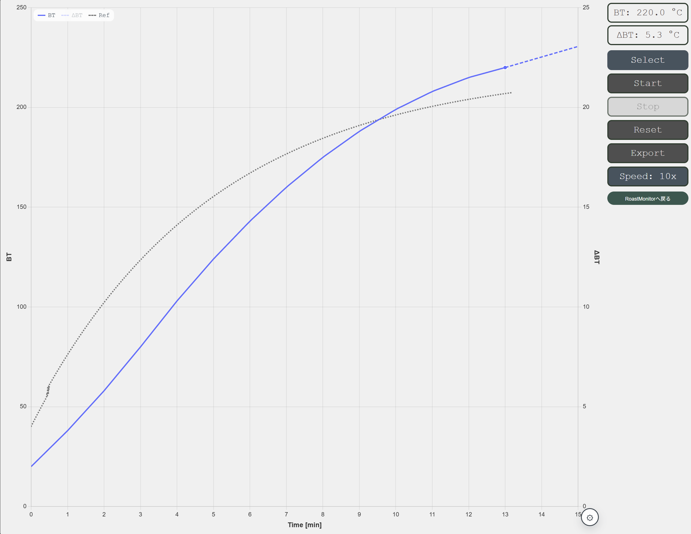

記録を開始する
温度データの記録とグラフ描画を開始します。Stop後に押すと続きから再開します。
Simulator guide
RoastMonitorのシミュレータでは、焙煎中の温度変化をブラウザで体験できます。 まずはStartを押して、グラフがゆっくり伸びていく様子をご覧ください。

Basic controls
温度データの記録とグラフ描画を開始します。Stop後に押すと続きから再開します。
現在のグラフを残したまま記録を停止します。途中で様子を確認したいときに使います。
確認画面を表示したあと、現在のグラフと記録データを消去して最初からやり直します。
表示中の焙煎記録を.alog形式のファイルとしてダウンロードします。
Display options
過去の焙煎例を点線で重ねて表示します。Noneを選ぶと非表示にできます。
1x、3x、5x、10xから速度を選べます。初期値は5xです。この項目はシミュレータ専用です。
BTは豆温度、ΔBTは1分あたりの温度変化を表します。右上の表示で最新値を確認できます。
右下の歯車から、BT、ΔBT、予測温度線の表示と非表示を切り替えられます。
シミュレータの温度データは、焙煎時間13分で20℃から220℃まで上昇するサンプルです。 Speedを変更しても、グラフの横軸は実際の焙煎時間として表示されます。